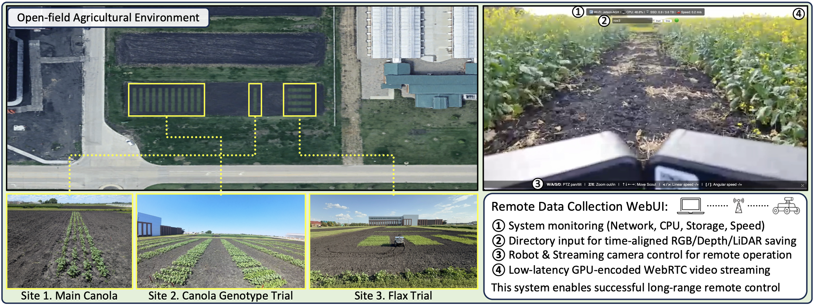
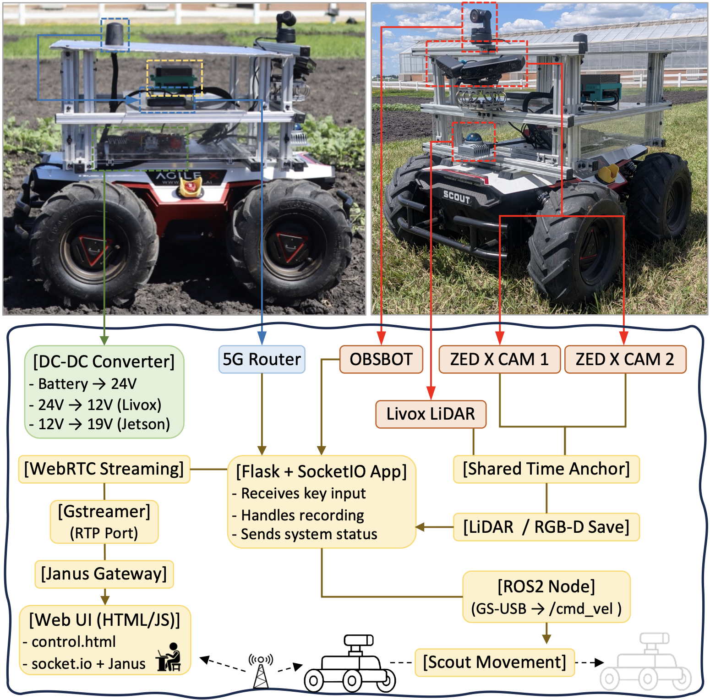
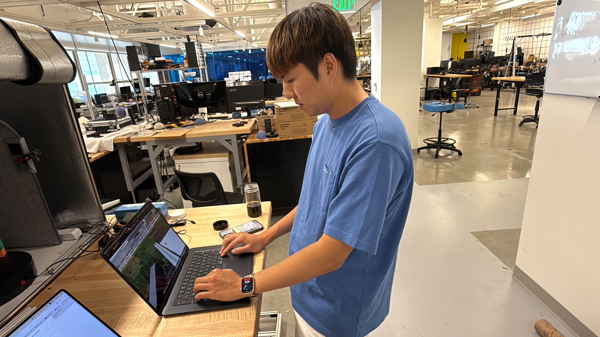
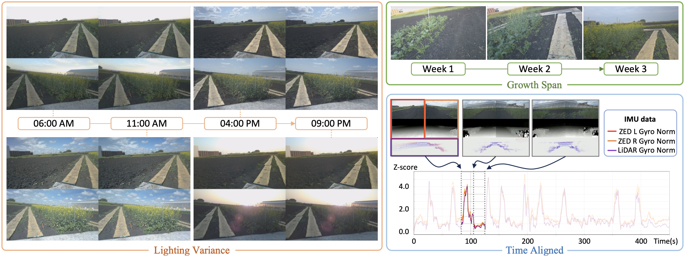
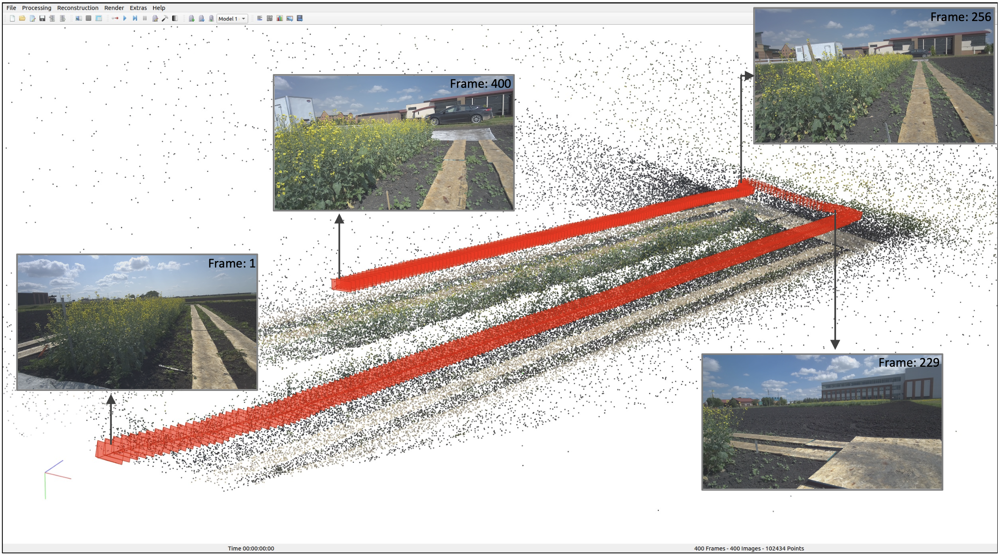

AgriChrono: A Multi-modal Dataset Capturing Crop Growth and Lighting Variability with a Field Robot
Under review, 2026


Project Collaboration NDSU (left) and UCLA (right)
TL;DR
we propose AgriChrono, a comprehensive framework purpose-built for "in-the-wild" scene-level 3D reconstruction, featuring three core contributions: a custom robotic platform, an 18 TB multi-modal dataset, and a stress-test benchmark. First, we deploy a modular robotic platform equipped with a highly accurate, time-synchronized sensor suite (LiDAR-RGB-Depth-IMU) to continuously log the high-fidelity 6-DoF poses and structural data required for reliable 3D reconstruction. Second, utilizing this platform, we release a massive dataset that rigorously captures continuous morphological crop growth and severe daily illumination shifts over a month. Finally, we establish a 7-scenario 3D reconstruction benchmark to evaluate 16 state-of-the-art NeRF and 3DGS methods. While validating our platform's data-gathering efficacy, this benchmark explicitly exposes critical robustness issues in existing baselines, demonstrating their failure to maintain consistent performance under wind-induced crop motion and lighting variations. Ultimately, AgriChrono provides a crucial stress-test to catalyze the development of robust, next-generation in-the-wild 3D reconstruction models.
Key Contributions
- Modular Robotic Acquisition Platform — we develop a custom, remote-operable field robot equipped with a precise, time-synchronized multi-modal sensor suite (RGB, Depth, LiDAR, IMU, and Pose). This platform serves as a foundational tool, validating that high-fidelity 3D reconstruction is achievable in challenging, "in-the-wild" agricultural environments.
- Large-Scale In-the-Wild Dataset — we release the comprehensive 18 TB AgriChrono dataset, uniquely capturing continuous morphological crop growth and systematic daily illumination changes. Collected daily over a one-month period, this dataset documents complex, scene-level structural changes to significantly accelerate real-world precision agriculture research.
- 3D Reconstruction Stress-Test Benchmark — we introduce a rigorous benchmark featuring 7 distinct scenarios to evaluate 16 state-of-the-art NeRF and 3DGS methods. This benchmark illustrates the significant challenges of non-rigid, dynamic scenes, explicitly exposing the fundamental robustness limitations of existing baselines against wind-induced motion and lighting shifts.
Project Design
1. Field & Remote Operation

This project was conducted across three distinct crop sites (Canola, Canola Genotypes, and Flax) at the North Dakota State University (NDSU) experimental farm. To enable agricultural researchers to operate the robot effortlessly without terminal commands, we developed a custom WebRTC-based low-latency Web UI using Flask and Janus. Initially, we intended to use a single ZED X camera for both data acquisition and monitoring. However, this approach presented several constraints: the ZED SDK's lack of simultaneous processing support, high latency in ROS implementation, storage capacity issues due to ROSBAG's low compression rate, and a fixed camera field-of-view (FoV). To resolve this, ZED data saving was restricted exclusively to its highly compressed .svo2 format, and an independent Obsbot PTZ camera was installed specifically for monitoring, thereby reducing system load and enhancing teleoperation convenience. (For an overview, see GitHub.)
2. Robot Platform Design

Built on a Scout UGV base, the platform integrates an NVIDIA Jetson AGX Orin,
dual ZED X cameras, and Livox LiDAR. To meet varying sensor voltage needs from the robot's 24–27V output,
we used DC-DC converters to supply 12V (LiDAR) and 18V (Jetson). This enabled over
4 hours of continuous operation per charge, supporting our rigorous daily schedule.
Due to severe GPS interference from the nearby Hector International Airport, we omitted our planned
RTK-GNSS module, pivoting to purely vision and IMU-based localization
(AprilTags planned for future work).
(See Hardware GitHub.)
To manage the robot remotely nationwide, we used Tailscale VPN for static IP assignment,
ensuring consistent connectivity. We also implemented a fail-safe mechanism that instantly
halts the robot upon communication loss, prioritizing safe unattended operation. These optimizations enabled
stable, long-range teleoperation from UCLA — 1,500 miles away — yielding a massive
18 TB dataset.
(See Software GitHub.)

3. Data Collection Protocol

To document continuous morphological crop growth and natural illumination variations, data were systematically collected four times daily over a three-week period. To counteract extreme field temperatures exceeding 100°F, we installed a sun-shielded top panel for thermal protection. However, this passive cooling was not completely sufficient during prolonged operations, occasionally resulting in FPS degradation due to thermal throttling (as future work, we plan to upgrade the thermal management system, including improved active ventilation). Collection was suspended during severe weather to prevent hardware failure. When post-rain muddy soil rendered the paths impassable, we manually placed wooden planks along the traversal routes to secure necessary traction, allowing us to maintain a consistent data collection frequency. (See Dataset GitHub.)
4. 3D Reconstruction Benchmark

To provide a highly reliable benchmark, we established initial geometries via point clouds and utilized
Visual-Inertial Odometry (VIO) fusing RGB and IMU data, validated to yield the highest pose
accuracy through rigorous comparative experiments. Combining these poses with the RGB images, we constructed and
publicly released a 3D reconstruction benchmark in COLMAP format, featuring
seven distinct scenarios.
Our analysis revealed that under favorable conditions — stable lighting and dense canopy structures —
state-of-the-art models achieved high accuracy, effectively validating our sensor pipeline.
Conversely, under harsher scenarios (e.g., intense illumination, sparse crops, wind-induced motion),
baseline performance fluctuated significantly, demonstrating that existing AI models remain highly vulnerable
to unconstrained, "in-the-wild" environments.
(Dataset download: Benchmark GitHub
· Leaderboard: Benchmark Page)
Novel View Synthesis Benchmark
| Method | Lighting Variance (Day 19) | Growth Span (6 AM) | ||||||||||||
|---|---|---|---|---|---|---|---|---|---|---|---|---|---|---|
| 06:00 AM | 11:00 AM | 04:00 PM | 09:00 PM | Day 6 | Day 13 | Day 20 | ||||||||
| PSNR ↑ | SSIM ↑ | PSNR ↑ | SSIM ↑ | PSNR ↑ | SSIM ↑ | PSNR ↑ | SSIM ↑ | PSNR ↑ | SSIM ↑ | PSNR ↑ | SSIM ↑ | PSNR ↑ | SSIM ↑ | |
| 3DGUT | 26.433 | 0.6915 | 22.860 | 0.5488 | 24.147 | 0.5906 | 27.813 | 0.7134 | 23.706 | 0.5130 | 24.856 | 0.5597 | 25.858 | 0.6477 |
| Octree-GS | 28.451 | 0.8009 | 24.402 | 0.7044 | 25.593 | 0.7269 | 29.716 | 0.8092 | 26.211 | 0.7098 | 27.669 | 0.7545 | 27.677 | 0.7771 |
| gsplat | 27.242 | 0.7637 | 23.740 | 0.6630 | 25.012 | 0.6882 | 28.714 | 0.7827 | 25.431 | 0.6348 | 26.730 | 0.6977 | 26.922 | 0.7355 |
| 3D-MCMC | 27.053 | 0.7194 | 23.385 | 0.5886 | 24.667 | 0.6281 | 28.180 | 0.7370 | 24.556 | 0.5566 | 26.134 | 0.6349 | 26.357 | 0.6795 |
| WildGaussians | 7.298 | 0.4037 | 11.498 | 0.3847 | 11.022 | 0.4061 | 8.158 | 0.4506 | 23.057 | 0.5129 | 24.422 | 0.5812 | 11.655 | 0.5140 |
| GS-W | 20.338 | 0.6593 | 17.946 | 0.5033 | 20.337 | 0.5588 | 22.819 | 0.7015 | 23.474 | 0.5186 | 23.616 | 0.5885 | 19.967 | 0.5889 |
| H3DGS | 27.990 | 0.7939 | 24.412 | 0.7076 | 25.488 | 0.7204 | 29.330 | 0.8042 | 25.473 | 0.6680 | 27.260 | 0.7390 | 27.350 | 0.7685 |
| 3DGRT | 26.702 | 0.7653 | 23.599 | 0.6616 | 24.733 | 0.6896 | 28.463 | 0.7828 | 25.317 | 0.6351 | 26.424 | 0.6986 | 26.301 | 0.7373 |
| Taming3DGS | 27.908 | 0.7756 | 24.342 | 0.6854 | 25.453 | 0.7012 | 29.179 | 0.7896 | 25.780 | 0.6533 | 27.241 | 0.7187 | 27.534 | 0.7495 |
| Scaffold-GS | 25.542 | 0.7403 | 21.193 | 0.6280 | 24.661 | 0.6739 | 27.770 | 0.7743 | 24.816 | 0.6427 | 25.286 | 0.6887 | 24.612 | 0.7032 |
| PGSR | 26.697 | 0.7429 | 23.673 | 0.6415 | 24.634 | 0.6610 | 28.277 | 0.7585 | 24.148 | 0.5459 | 25.236 | 0.6271 | 26.607 | 0.7122 |
| 3DGS | 27.107 | 0.7717 | 23.950 | 0.6742 | 24.970 | 0.6932 | 28.788 | 0.7884 | 25.449 | 0.6449 | 26.891 | 0.7097 | 26.987 | 0.7420 |
| Zip-NeRF | 29.582 | 0.7953 | 25.923 | 0.7562 | 27.466 | 0.7663 | 30.675 | 0.8065 | 25.943 | 0.6097 | 28.844 | 0.7742 | 29.418 | 0.8105 |
| Tetra-NeRF | 28.225 | 0.7333 | 24.057 | 0.6068 | 25.564 | 0.6458 | 29.337 | 0.7558 | 25.324 | 0.5976 | 27.096 | 0.6581 | 27.388 | 0.7020 |
| NerfStudio | 23.703 | 0.6389 | 20.275 | 0.4353 | 21.573 | 0.5007 | 24.739 | 0.6555 | 22.133 | 0.4449 | 18.809 | 0.4454 | 23.194 | 0.5809 |
| SeaThru-NeRF | 25.371 | 0.6274 | 21.421 | 0.4415 | 22.885 | 0.4975 | 26.456 | 0.6527 | 22.691 | 0.4429 | 21.488 | 0.4601 | 24.084 | 0.5681 |
Novel view synthesis benchmark on Site 1. Bold = best, underline = second best per column.

Qualitative comparison of novel view synthesis results across evaluated methods.
Conclusion
We present AgriChrono, a comprehensive field robotics framework whose benchmark results serve a dual purpose. First, they validate our robotic platform's design, proving it successfully captures the high-fidelity data required for reliable 3D reconstruction in complex agricultural fields. Second, by explicitly exposing the performance degradation of current baselines under dynamic "in-the-wild" stressors, our benchmark provides a vital stress-test for the AI community. This research acts as a critical stepping stone, catalyzing the development of more robust models capable of unconstrained scene understanding — eventually bridging the gap to extract concrete downstream phenotyping metrics. (See Benchmark Page)
Acknowledgement
Experimental farm facilities, on-site data collection support, and agricultural domain expertise provided by North Dakota State University (NDSU).
This work was supported in part by the U.S. Department of Agriculture (Grant No. 2024-67021-42528 and 2022-67022-37021), the Korea Creative Content Agency (KOCCA) under Grant RS-2024-00345025, and the Institute of Information & Communications Technology Planning & Evaluation (IITP) funded by the Korean government (MSIT) under Grant No. RS-2019-II190079.